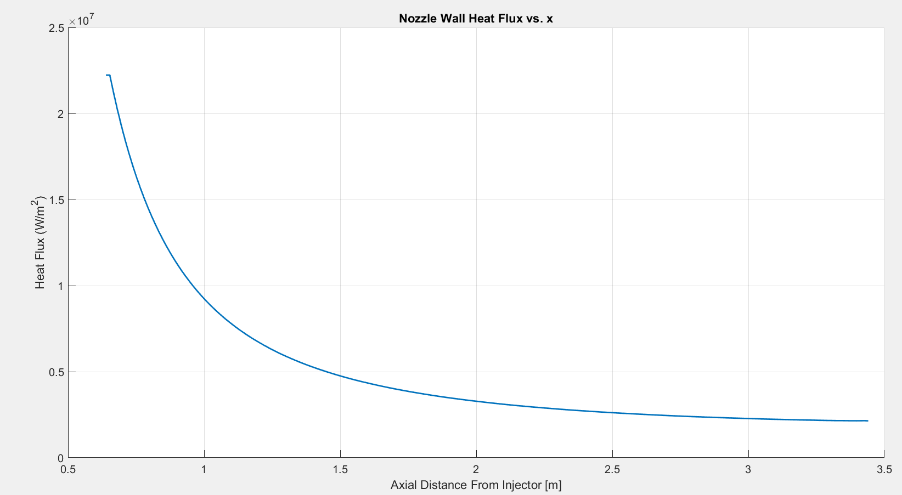

Nozzle Coolant Tubes
After departing the LTMCC, the hot combustion gas flows past the nozzle attach flange and enters the nozzle proper. Although temperatures and heat flux are greatly reduced in the nozzle as compared to the LTMCC, wall thermal limits are still an important design consideration. To keep wall temperatures in check, the nozzle utilizes a regenerative cooling system very similar to the LTMCC. Cryogenic hydrogen is routed down the exterior of the nozzle through the three transfer ducts depicted below in Figure 6.2.1. The transfer ducts distribute the hydrogen into the coolant inlet manifold that encircles the nozzle exit plane. From this manifold, coolant enters a network of 1080 parallel tubes arrayed circumferentially around the nozzle bell.[67] These coolant tubes form the shell of the nozzle itself. Nine circumferential hatbands enable this “tubular wall” design to maintain structural rigidity. The hydrogen coolant flows up these tubes from the inlet manifold (Station 6) until it reaches the outlet manifold at the nozzle attach flange (Station 7). Refer to Figure 1.1.1 for a schematic that depicts how this cooling system integrates into the SSME fuel system as a whole.
Figure 6.2.1: Nozzle Cooling System [78 ], [79]
Figure 6.2.2: Tubular Wall Design [80 ], [81]
A similar approach to that described in the previous section can be used in order to predict wall temperature and heat flux as a function of axial position down the length of the nozzle. The first step in the analysis requires defining the geometry of the coolant tubes. Unfortunately, there is very little published data describing the dimensions of these tubes, which drives the analysis to begin with several geometrical assumptions. First, it is assumed that the outer radius of each individual coolant tube ${r_{t}}$ is sized to touch tangentially with both its neighboring tubes and with an arc representing the inner circumference of the nozzle bell:
Figure 6.2.3: Tube Geometry
Equation 5.2.2 provides the radius of the nozzle bell, $r_n$, as a function of axial distance from the injector face. Using this information, the outer radius of each coolant tube can be determined with the law of cosines:
The angle $\theta$ is determined by diving $2\pi$ by the number of coolant tubes, in this case 1080.
Next, the the thickness, $t$, of the coolant tube walls is assumed. It is desirable to keep this thickness as small as possible in order to minimize both nozzle weight and wall temperatures. NASA recommends that wall thickness should not be decreased below 0.254 mm, even if a stress analysis indicates a smaller thickness is theoretically feasible. Design history has shown that decreasing wall thickness below this critical value tends to result in tube failure due to the presence of small flaws and granular effects in the material itself.[81] As an initial guess, tube thickness in this model is assumed to be constant at 0.254 mm along the length of the nozzle. The length of the inner radius was then calculated by subtracting the tube thickness from the outer radius. The figure below plots these radii as a function of axial position.
Figure 6.2.4: Tube Radii
Heat Transfer Model
A similar approach to that described in Section 6.1 is used to predict the tube wall temperature, coolant temperature increase, and coolant pressure drop. Two of the same three fundamental equations apply, and are reprinted below:
There are a few slight differences in how these equations are implemented. Starting with Equation 6.1.1, we must devise a new expression for $A_{gas}$. This is the surface area of the coolant tube exposed to the hot gas inside the combustion chamber:
This equation describes the surface area of one-half of a cylinder with length $dx$ and radius $r_t$. The combustion gas heat transfer coefficient, $h_{gas}$, remains as defined by Equation 6.1.5.
Moving on to Equation 6.1.2, new expressions are required for both $h_{h_{2}}$ and $A_{h_{2}}$. $A_{h_{2}}$ represents the surface area of the coolant tube interior through which heat transfer is occurring. Since only one side of the coolant tube is exposed to the hot gas in the combustion chamber, an expression for one-half the surface area of a cylinder is used again. It is important to note that the radius in the following expression is the inner radius of the tube. The length of the inner radius is simply the length of the outer radius minus the wall thickness $t$, which in this case is 0.254 mm.
The heat transfer coefficient is calculated in an identical manner to that shown in Section 6.1, but this team a different Nusselt number correlation is used:[82]
The $C$ coefficients remain as defined in the previous section.
As was done for the LTMCC, the final equation required to close the system is Fourier’s Law. In the previous section, heat transfer between the hot and cold sides of the LTMCC was approximated as conduction through a plane wall. This approximation was valid because the width of each coolant channel was small compared to the radius of curvature of the LTMCC inner wall. In the nozzle proper, the width of each cooling channel ($2r_t$) is on the same order of magnitude as tube’s radius of curvature ($r_t$) . An expression for conduction through one-half of a cylindrical wall must be utilized.[75]
Equations 6.1.1, 6.1.2, and 6.2.4 can be combined into the following system of equations, which is solved utilizing the same procedure as in Section 6.1.
In the above equations, it is once again very important to pay close attention to the temperatures at which thermodynamic and transport properties are evaluated. Transport properties for the hot combustion gas were calculated at the reference temperature $T^*$ described by Equation 6.1.5a. Transport properties of liquid hydrogen were calculated at the film temperaure $T_f$ shown in Equation 6.1.5b. Thermodynamic properties for both fluids were calculated at the bulk temperature.
Coolant pressure drop and temperature increase were determined with Equations 6.1.24 through 6.1.30. Once again, these quantities were computed for each tube segment $dx$.
Stress Analysis
Next, a stress analysis was performed to validate the choice of tube dimensions. There are two two tangential stresses that must be taken into consideration: thermal stress due to heat flux, and hoop stress due to coolant pressure. These stresses are modeled by Equation 6.2.8:[38]
The variables $P_{H_{2}}$ and $P_g$ in the first term correspond to the pressure of the hydrogen coolant in the tubes and the pressure of the combustion gas flowing through the nozzle. Both of these values vary along the length of the nozzle. The largest coolant pressures occurs at the exit plane, and the largest combustion gas pressure occurs at the nozzle attach flange. The second term accounts for thermal stress due to the heat flux, $q^"$, through the tube walls. The remaining variables in this term correspond to material properties. The tubes are manufactured from A286 stainless steel.[67] Material properties are tabulated below.[83] Note that several of these properties are functions of temperature. These properties were evaluated at the average temperature between the hot and cold tube walls at each segment $dx$.
| Property | Symbol | Value |
|---|---|---|
| Elastic Modulus | $E$ | $-7.957\times10^7\left(\frac{T_{hw}+T_{cw}}{2}\right)+2.25\times10^{11}$ $Pa$ |
| Coefficient of Themal Expansion | $\alpha$ | $17\times10^{-6} $ $1/K$ |
| Poisson Ratio | $\nu$ | $0.33$ |
| Thermal Conductivity | $k$ | $1.93148\times10^{-2}\frac{(T_{hw}+T_{cw})}{2}+6.89313$ $\frac{W}{m-K}$ |
Table 6.2.1
Additionally, a longitudinal thermal stress, $\sigma_2$, exists due to the temperature difference between the hot and cold sides of the tube:
where $\Delta T$ represents the average temperature difference between the hot and cold halves of the tube. These stresses are depicted below on Figure 6.2.5.
Figure 6.2.5: Tube Stress
Note that there are no shear stresses present and $\sigma_1$ and $\sigma_2$ are orthogonal. Therefore these are principle stresses that can be used in conjunction with distortion energy theory to predict the effective stress at which failure will occur:[81]
This analysis assumes there is no axial stress acting along the length of the tube (i.e. $\sigma_3=0$).
NASA recommends designing the tubes for a rupture strength based on the maximum expected hot wall temperature and desired operating life. [81] The SSME operational life is designed to last 7.5 hours [84] at a maximum sustained temperature of 1000 F[2] . At this temperature, A286 steel can withstand a maximum stress of 690 MPa for up to 10 hours prior to rupture.[83] Therefore a factor of safety was calculated by dividing 690 MPa by the effective stress, $\sigma_{eff}$. Failure is not expected to occur when this ratio is greater than one.
An iterative process was used to calculate this factor of safety down the length of each tube. First, the hot gas flow model through the nozzle was run using the procedure described in Section 5.3. This provided $P_g$ as a function of axial position. Next, the nozzle heat transfer model described above was used to compute tube heat flux, $q^"$, coolant pressure, $P_{H_{2}}$, and the hot and cold wall temperatures as a function of axial position. These results were input into Equations 6.2.3 - 6.2.5, along with the tube wall thickness. After completing these calculations along the length of the tube, the resulting temperature and flux profiles were plugged back in to the compressible flow model described in Section 5.3. This allowed the hot gas flow calculations (Equations 5.3.1 - 5.3.3) to be be repeated with the $Q(x)$ terms included to account for the effects of entropy. The resulting hot gas flow profile was then imported back into the heat transfer model described in this section, and the entire process was iterated until global convergence was obtained. Initial results assuming constant tube dimensions along the length of the nozzle are presented below.
 Figure 6.2.6: Heat Flux
Figure 6.2.7: Wall Temperatures
These plots display several interesting trends. First, note that the domain of the plots begin at $x =$0.64 meters (25.19 inches), rather than 0. This is in line with the global coordinate system established in Section 5.1. $x =$0 corresponds to the combustion chamber injector face. The nozzle itself begins 25.19 inches downstream from the injector face. Refer to Figure 5.2.5.
When progressing upstream from the nozzle exit plane toward the throat both heat flux and wall temperature increase as expected. The large flux near the nozzle attach flange drives the thermal stress $\sigma_1$ and effective stress $\sigma_{eff}$ to increase above 690 MPa. In turn, this causes the factor of safety against rupture to drop below one, implying tube failure at all $x$ values less than approximately 0.71 m. These trends are plotted below on Figures 6.2.8 and 6.2.9.
Figure 6.2.8: Stress Analysis
Figure 6.2.9: Factor of Safety
An additional problem arises when examining hydrogen pressure as it flows up the length of the nozzle. As shown below in Figure 6.2.10, pressure drops excessively for x values less than 1. This is due to the fact that the tube inner radius has contracted significantly compared to its size at the exit plane (see Figure 6.2.4). The mass flow rate through these tubes must remain constant. This implies that fluid velocity must increase, as shown below on Figure 6.2.11. As velocity increases, pressure drops in accordance with Equation 6.1.30.
Figure 6.2.10: Coolant Pressure

Figure 6.2.11: Coolant Velocity
After departing the nozzle, the coolant must retain sufficient pressure to flow into the pre-burner combustion chambers, which are pressurized to 33 MPa. The model here here shows that the output cooling jacket output pressure is not sufficient to meet this requirement. Coolant tube re-design is required in order to reduce the pressure drop and increase the factor of safety against rupture.
The easiest way to minimize pressure drop would be to increase the coolant tube radius. Unfortunately since tube radius is inseparably linked to nozzle diameter through 6.2.1, it is not possible to increase this value. What can be done is to increase the height of the coolant tubes. The inner surface of the nozzle contour will still be formed by circular coolant tube halves of radius $r_t$. But the height of the coolant tubes will be allowed in increase through the thickness of the nozzle wall, as shown on the rough sketch below.
Figure 6.2.12: Modified Coolant Tubes
In any spacecraft, adding structural weight comes at a high cost. Every effort must be made to minimize unnecessary mass. The modified coolant tubes are obviously larger, and weigh more than the original. Therefore the modified geometry will only be applied to the region with excessive pressure drop ($x < 0.85$ meters). The following plot shows how this re-design allows tube cross sectional area to remain constant near the nozzle attach flange.
Figure 6.2.13: Tube Cross-Sectional Area
This change in geometry does not have much of an effect on heat flux, but it does cause the maximum wall temperature to increase significantly. The effective stress in the re-designed tube has decreased, and the factor of safety is now greater than one along the entire length of the nozzle. The new design reduces exit velocity by 329 m/s, which in turn reduces pressure drop by 4 MPa. The following plots display these trends. Notice the changes only take place where the geometry has been modified (i.e. $x<0.85$ meters). As expected, the solutions are identical at all other locations.
Figure 6.2.14: Modified Tube Heat Flux
Figure 6.2.15: Modified Tube Wall Temperatures
Figure 6.2.16: Modified Tube Stresses
Figure 6.2.17: Modified Tube Factor of Safety
Figure 6.2.18: Coolant Pressure in Modified Tube
Figure 6.2.19: Coolant Temperature in Modified Tube
Figure 6.2.20: Coolant Velocity in Modified Tube
The following table compares the output from this model to data reported by Boeing. The results are in excellent agreement.
| This Model | Boeing[2] | |
|---|---|---|
| Maximum Hot Wall Temperature $[K]$ | 821 | 811 |
| Coolant Exit Pressure $[MPa]$ | 36.47 | 37.37 |
| Coolant Exit Temperature $[K]$ | 315 | 331 |
Table 6.2.1